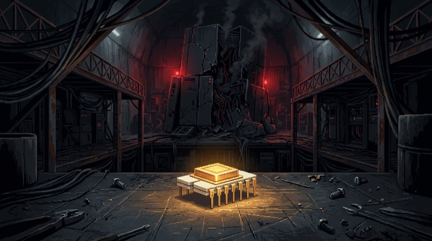
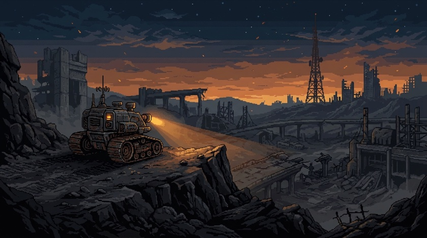
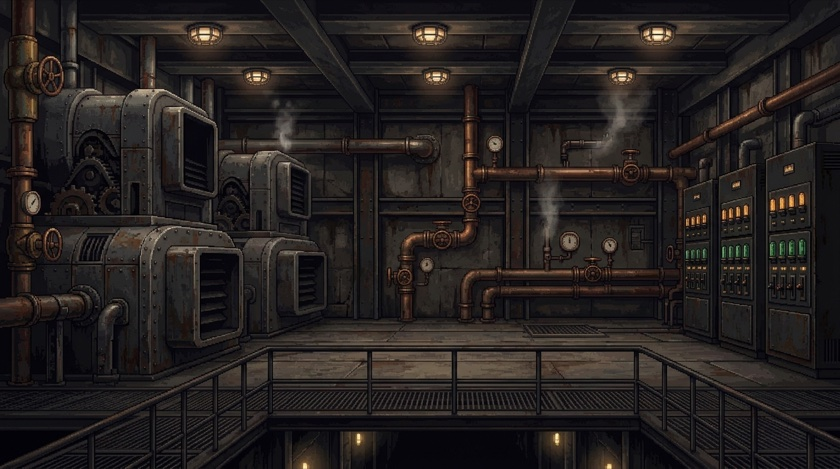

ACT I · 01
逆転スイッチを直せ
▾
📖
図鑑
⚙
設定
▲ 回路を広く
ハコ (A.R.C.-0)
MISSION
💬 物語
↶
⌖
✕
⚡ CLK脈動
次のステージ ▶
テスト実行中...
⚙ 設定

A.D. 2094 // SHELTER ARK-7 ARCHIVE
SILICON
GENESIS
シリコン・ジェネシス
たった1個のスイッチから、
もういちど人類の頭脳を創り出せ。
▶ 物語をはじめる（PROLOGUE）
▶ つづきから
🎬 プロローグをもう一度観る
CS知識ゼロから始める論理回路・自作CPUパズル

A.D. 2052
1 / 23
スキップ ⏭
MASTER PRIMITIVE // 001
NAND
両方 ON(1) のときだけ OFF(0) ／ それ以外はすべて ON(1)
SYSTEM ARCHIVE
地下シェルター記録ログ

ACT 0 · 00
1 / 4
スキップ ⏭
篝（カガリ）博士
計算機歴史学者・旧文明復元主任
✕